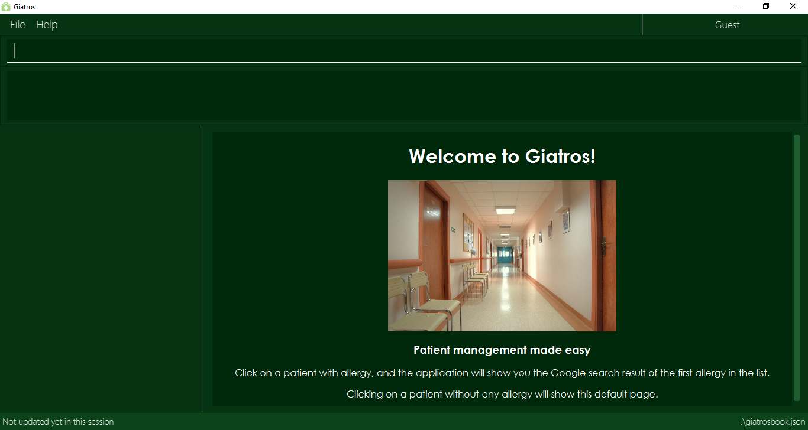

By: CS2103-AY1819S2-W13-4 Since: January 2019 Licence: MIT
- 1. Introduction
- 2. Quick Start
- 3. User Authentication Features
- 4. Application Features
- 4.1. Viewing help :
help - 4.2. Adding a patient:
add - 4.3. Listing all patients :
list - 4.4. Editing a patient :
edit - 4.5. Locating patients by name:
find - 4.6. Deleting a patient:
delete - 4.7. Selecting a patient :
select - 4.8. Listing entered commands :
history - 4.9. Undoing previous command :
undo - 4.10. Redoing the previously undone command :
redo - 4.11. Adding allergy to a patient:
addall - 4.12. Removing allergy from a patient:
remall - 4.13. Adding appointment to a patient:
addapt - 4.14. Removing appointment from a patient:
remapt - 4.15. Clearing all entries :
clear - 4.16. Exiting the program :
exit - 4.17. Saving the data
- 4.18. Exporting the data
export
- 4.1. Viewing help :
- 5. FAQ
- 6. Command Summary
1. Introduction
Giatros is a hospital-management app that facilitate better interactions between different parties involved in the hospital. It is mainly targeted at the hospital staff who are keeping track of the patient records.
2. Quick Start
-
Ensure you have Java version
9or later installed in your Computer. -
Download the latest
Giatros.jarhere. -
Copy the file to the folder you want to use as the home folder for your Giatros.
-
Double-click the file to start the app. The GUI should appear in a few seconds.
 -
At this stage, you are in Guest mode and you will not be able to execute any commands yet. You need to login to your account before you can use the application.
-
If you are a staff who already has an account, please login using this format :
login id/USERNAME pw/PASS. -
If you do not have an account, please approach the manager to create an account for you.
-
Refer to Section 3, “User Authentication Features” for details of the login system.
-
-
Once logged in, you can type the command in the command box and press Enter to execute it.
e.g. typinghelpand pressing Enter will open the help window. -
Some example commands you can try:
-
list: lists all patients -
addn/John Doe p/94785930 y/Ibuprofen: adds a patient namedJohn Doe, who is allergic toIbuprofeninto Giatros -
delete3: deletes the 3rd patient shown in the current list -
exit: exits the app
-
-
Refer to Section 4, “Application Features” for details of each command.
3. User Authentication Features
When the application is first opened, it will be in Guest mode and no command can be executed except the login command.
3.1. Logging in to the application : login
Allows a guest to login and start using the application.
Format: login id/USERNAME pw/PASSWORD
A dummy staff account with sample data is available by default. Username: STAFF and Password: 1122qq
|
3.2. Logging out of the application : logout
Allows the user to logout when done with the session.
Format: logout
| You can only logout when you have been logged in. |
3.3. Registering a new staff to use the application : register
Allows the manager to create new staff account using which new staff can log into the application.
Format: register id/USERNAME pw/PASSWORD n/NAME
A dummy manager account is available by default. Username: MANAGER and Password: 1122qq
|
4. Application Features
Command Format
-
Words in
UPPER_CASEare the parameters to be supplied by the user e.g. inadd n/NAME,NAMEis a parameter which can be used asadd n/John Doe. -
Items in square brackets are optional e.g
n/NAME [y/ALLERGY]can be used asn/John Doe y/Ibuprofenor asn/John Doe. -
Items with
… after them can be used multiple times including zero times e.g.[y/ALLERGY]…can be used asy/Ibuprofen,y/Ibuprofen y/Penicillinetc. -
Parameters can be in any order e.g. if the command specifies
n/NAME p/PHONE_NUMBER,p/PHONE_NUMBER n/NAMEis also acceptable.
4.1. Viewing help : help
Allows a new user to learn about the different commands that are available.
Format: help
4.2. Adding a patient: add
Adds a patient into Giatros.
Format: `add n/NAME p/PHONE_NUMBER e/EMAIL a/ADDRESS [y/ALLERGY] [apt/APPOINTMENT]… `
| A patient can have any number of allergies (including 0) A patient can have any number of appointments (including 0) |
Examples:
-
add n/John Doe p/98765432 e/johndoe@gmail.com a/120 Jurong West St 23, #13-189 y/Ibuprofen -
add n/Betsy Crowe p/12345678 e/ betsy@ymail.com.sg a/56 Lorong 2 Toa Payoh, #01-129 y/Ibuprofen y/Penicillin
4.3. Listing all patients : list
Shows a list of all patients stored in Giatros.
Format: list
4.4. Editing a patient : edit
Edits an existing patient stored in Giatros.
Format: edit INDEX [n/NAME] [p/PHONE] [e/EMAIL] [a/ADDRESS] [y/ALLERGY] [apt/APPOINTMENT]…
| This feature can be used to add, remove, or update a patient’s name, phone, email, address, allergy or appointment |
Examples:
-
edit 1 p/10293847
Edits the phone number of the 1st patient to be10293847. -
edit 2 n/Betsy Crower y/ apt/
Edits the name of the 2nd patient to beBetsy Crowerand clears all existing allergies and appointments.
4.5. Locating patients by name: find
Finds patients whose names contain any of the given keywords.
Format: find KEYWORD [MORE_KEYWORDS]
| This feature is useful to find out whether a patient has been registered in the system. |
| Doctors and pharmacists can also use this feature to find out more about a specific patient, e.g. patient’s allergies and appointments |
Examples:
-
find John
ReturnsjohnandJohn Doe -
find Betsy Tim John
Returns any patients having namesBetsy,Tim, orJohn
4.6. Deleting a patient: delete
Removes a patient from Giatros
Format: delete INDEX
Examples:
-
list
delete 2
Deletes the 2nd patient stored in Giatros. -
find Betsy
delete 1
Deletes the 1st patient in the results of thefindcommand.
4.7. Selecting a patient : select
Selects the patient identified by the index number used in the displayed patient list.
Format: select INDEX
Examples:
-
list
select 2
Selects the 2nd patient in the address book. -
find Betsy
select 1
Selects the 1st patient in the results of thefindcommand.
4.8. Listing entered commands : history
Lists all the commands that you have entered in reverse chronological order.
Format: history
|
Pressing the ↑ and ↓ arrows will display the previous and next input respectively in the command box. |
4.9. Undoing previous command : undo
Restores the Giatros book to the state before the previous undoable command was executed.
Format: undo
|
Undoable commands: those commands that modify the Giatros book’s content ( |
Examples:
-
delete 1
list
undo(reverses thedelete 1command) -
select 1
list
undo
Theundocommand fails as there are no undoable commands executed previously. -
delete 1
clear
undo(reverses theclearcommand)
undo(reverses thedelete 1command)
4.10. Redoing the previously undone command : redo
Reverses the most recent undo command.
Format: redo
Examples:
-
delete 1
undo(reverses thedelete 1command)
redo(reapplies thedelete 1command) -
delete 1
redo
Theredocommand fails as there are noundocommands executed previously. -
delete 1
clear
undo(reverses theclearcommand)
undo(reverses thedelete 1command)
redo(reapplies thedelete 1command)
redo(reapplies theclearcommand)
4.11. Adding allergy to a patient: addall
Adds one or more allergies to an existing patient in Giatros.
Format: addall INDEX y/ALLERGY [y/ALLERGY]…
|
Allergy names should be alphanumeric, i.e. |
Examples:
-
addall 1 y/ibuprofen
Adds the allergyibuprofento the 1st patient in the list. -
addall 3 y/aspirin y/amoxicillin
Adds two allergies,aspirinandamoxicillinto the 3rd patient in the list.
4.12. Removing allergy from a patient: remall
|
Allergy names should be alphanumeric, i.e. |
Removes one or more allergies to an existing patient in Giatros.
Format: remall INDEX y/ALLERGY [y/ALLERGY]…
Examples:
-
remall 1 y/ibuprofen
Removes the allergyibuprofenfrom the 1st patient in the list. -
remall 3 y/aspirin y/amoxicillin
Removes two allergies,aspirinandamoxicillinfrom the 3rd patient in the list.
4.13. Adding appointment to a patient: addapt
Adds one or more appointments to an existing patient in Giatros.
Format: addapt INDEX apt/APPOINTMENT [apt/APPOINTMENT]…
|
Appointments should be in one of the following forms, 'yyyy-MM-dd HH:mm:ss' , 'yyyy-MM-dd HH:mm', 'yyyy-MM-dd HH', and should be a valid date-time. Entering '2016-01-01' (no time value), '2019-02-29 10:10' (leap year, day does not exist), '2019-02-29 25:10' (impossible time), etc is not acceptable. |
Examples:
-
addapt 1 apt/2019-01-01 15
Adds the appointment2019-01-01 15to the 1st patient in the list. -
addapt 3 apt/2019-01-01 15:15 apt/2019-02-02 15:15:30
Adds two appointments,2019-01-01 15:15and2019-02-02 15:15:30to the 3rd patient in the list.
4.14. Removing appointment from a patient: remapt
|
Appointments should be in one of the following forms, 'yyyy-MM-dd HH:mm:ss' , 'yyyy-MM-dd HH:mm', 'yyyy-MM-dd HH', and should be a valid date-time. Entering '2016-01-01' (no time value), '2019-02-29 10:10' (leap year, day does not exist), '2019-02-29 25:10' (impossible time), etc is not acceptable. |
Removes one or more appointments to an existing patient in Giatros.
Format: remapt INDEX apt/APPOINTMENT [apt/APPOINTMENT]…
Examples:
-
remapt 1 apt/2019-01-01 15
Removes the appointment2019-01-01 15from the 1st patient in the list. -
remapt 3 apt/2019-01-01 15:15 apt/2019-02-02 15:15:30
Removes two appointments,2019-01-01 15:15and2019-02-02 15:15:30from the 3rd patient in the list.
4.15. Clearing all entries : clear
Clears all entries from Giatros.
Format: clear
4.16. Exiting the program : exit
Exits the program.
Format: exit
4.17. Saving the data
Giatros data are saved in the hard disk automatically after any command that changes the data.
There is no need to save manually.
4.18. Exporting the data export
Exports the giatros book to a cvs file saved on the local disk at the specified DESTINATION.
Format: export [d/DESTINATION]
-
DESTINATIONcan end with an extension of .csv or end as a path to a directory. -
Existing data file at
DESTINATIONwill be overwritten. -
A table view of the exported data will appear on execution of command.
-
.csv files can be opened and edited in Microsoft Excel
5. FAQ
Q: How do I transfer my data to another Computer?
A: Install the app in the other computer and overwrite the empty data file it creates with the file that contains the data of your previous Giatros folder.
6. Command Summary
6.1. User Authentication Features
-
Login (Guest-only)
login id/USERNAME pw/PASSWORDe.g.login id/STAFF pw/1122qq -
Logout (Staff-only)
logout -
Register (Manager-only)
register id/USERNAME pw/PASSWORD n/NAMEe.g.register id/USER pw/1122qq n/New User
6.2. Application Features
-
Add
add n/NAME p/PHONE_NUMBER e/EMAIL a/ADDRESS [y/ALLERGY] [y/APPOINTMENT]…
e.g.add n/James Ho p/22224444 e/jamesho@example.com a/123, Clementi Rd, 1234665 y/paracetamol y/ibuprofen -
Add appointment
addapt INDEX apt/APPOINTMENT [apt/APPOINTMENT]…
e.g.addapt 1 apt/2019-01-01 15 -
Remove appointment
remapt INDEX apt/APPOINTMENT [apt/APPOINTMENT]…
e.g.remapt 1 apt/2019-01-01 15 -
Clear :
clear -
Delete :
delete INDEX
e.g.delete 3 -
Edit :
edit INDEX [n/NAME] [p/PHONE_NUMBER] [e/EMAIL] [a/ADDRESS] [y/ALLERGY] [apt/APPOINTMENT]…
e.g.edit 2 n/James Lee e/jameslee@example.com -
Find :
find KEYWORD [MORE_KEYWORDS]
e.g.find James Jake -
List :
list -
Help :
help -
Select :
select INDEX
e.g.select 2 -
History :
history -
Undo :
undo -
Redo :
redo -
Add allergy :
addall INDEX y/ALLERGY [y/ALLERGY]e.g.addall 1 y/ibuprofen -
Remove allergy :
remall INDEX y/ALLERGY [y/ALLERGY]e.g.remall 1 y/aspirin y/paracetamol -
Export :
export [d/DESTINATION]e.g.export d/~/Desktop